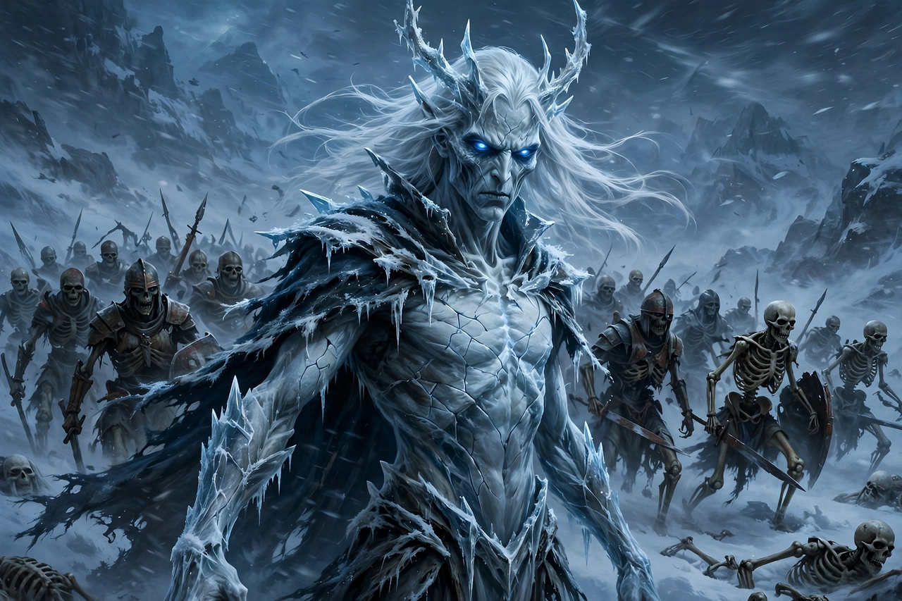

White Walkers
| White Walkers (the Others) | |
|---|---|
| First appearance | "Winter Is Coming" (2011); A Game of Thrones prologue (1996, as the Others) |
| Created by | George R. R. Martin |
| Location | Lands of Always Winter, far north of the Wall |
| Leader | The Night King (television only) |
| Weaknesses | Dragonglass (obsidian); Valyrian steel |

The White Walkers are a fictional race of supernatural beings in George R. R. Martin's A Song of Ice and Fire novels, where they are called the Others, and in the HBO television adaptation Game of Thrones, where the name "White Walkers" is used for them. They are tall, gaunt, pale humanoids with deep blue eyes and armour that seems to shift colour, who ride dead horses and command armies of reanimated corpses called wights.
In the novels
The Others appear in the prologue of A Game of Thrones, killing a party of Night's Watch rangers. In Westerosi legend they came during the Long Night, a winter that lasted a generation, riding dead animals and hunting with packs of huge spiders, before being defeated at the Battle for the Dawn by the last hero, aided by the Children of the Forest. They speak a language that sounds like ice cracking, wield razor-thin crystal swords that can shatter steel, and can be killed by blades of dragonglass (obsidian). Samwell Tarly kills one with an obsidian dagger in A Storm of Swords, earning the name "Sam the Slayer."
In the television series
The series gives the White Walkers an origin absent (so far) from the novels: they were created thousands of years ago by the Children of the Forest, who plunged a dragonglass dagger into the heart of a captured First Man to make a weapon against mankind; the resulting first White Walker became the Night King. Craster, a wildling, sacrifices his infant sons to them, and the Night King transforms the babies into new White Walkers. The Night King raises the dead en masse at Hardhome and brings down the Wall with the reanimated dragon Viserion. He and all his creatures are destroyed at the Battle of Winterfell when Arya Stark kills him with a Valyrian steel dagger.
Development and reception
Martin has described the Others as "strange, beautiful… a different sort of life," closer to the Sidhe of Celtic legend than to zombies, and deliberately alien in motive. Critics have read the White Walkers as an allegory of climate change: an existential, slow-moving threat that the squabbling kingdoms of men ignore while competing for the Iron Throne — an interpretation Martin has partly endorsed.
See also: A Song of Ice and Fire · Game of Thrones